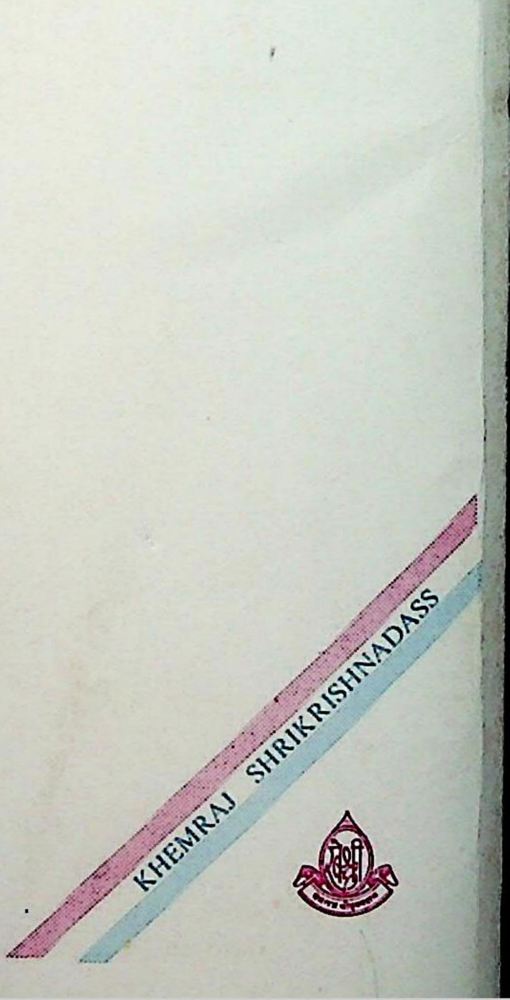

हमारे प्रक्मशनों की अधिक जानकारी व खरीद के सिये हमारे निजी स्थान : खेमराज श्रीकष्णदास अध्यक्ष ; श्रर्वैकटेश्वर प्रस, ९१/१०९, खेमराज श्रीकृष्णदास मार्ग, ७ वी खेतवाडी वेक रोड कार्मर, मुबई = ४०० ००४. दूरभाष /कैक्स-०२२-२३८५७४५६. खेमराज श्रीकृष्णदास । ६६, हडपसर इण्डष्टियल इस्टेट, पुणे - ४११ ०१३. दूरभाष-०२०-२६८७१०२५, -०२०- २६८७४९०७. गगाविष्णु श्रीकृष्णदास, लक्ष्मी बेकटेश्वर प्रेस व बुक डप ` श्रीलक््परवेकटेश्वर प्रेस निल्डीग, जूता छापाखाना गली, अहिल्याबाई चौक, कल्याण, जि. ठाणे. महाराष्ट - ४२१ ३०१ दूरभाष /कैक्स- ०२५१-२२०९०६१. खेमराज चौक, वाराणसी (उ.प्र.) २२१ ००१. दूरभाष - ०५४२-२४२००७८
